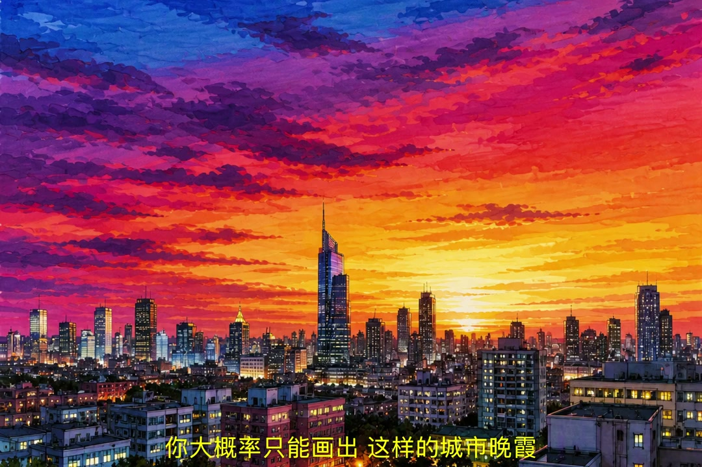
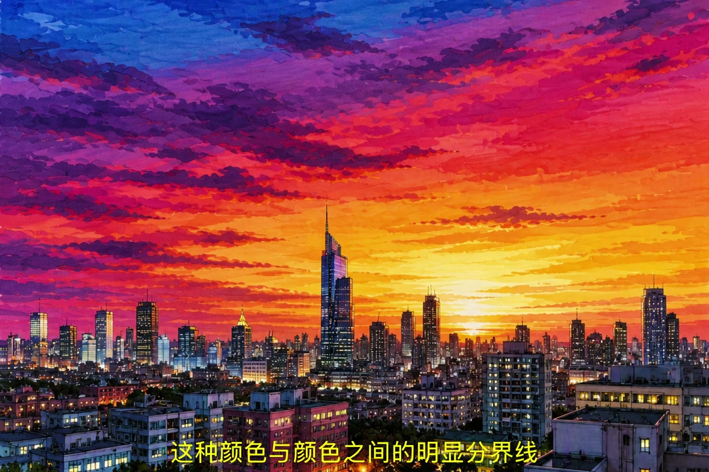
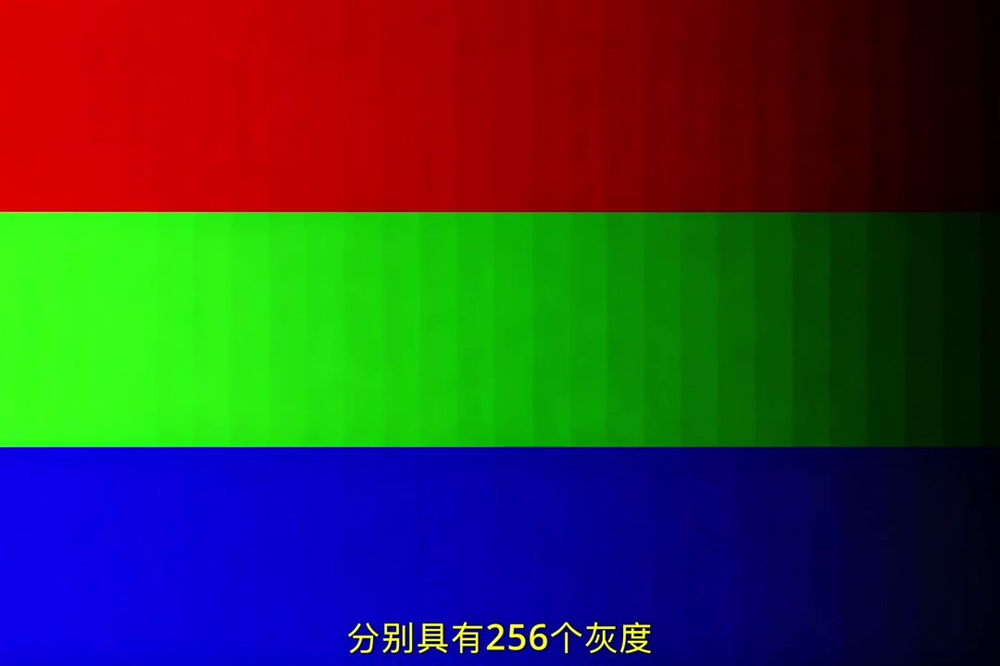
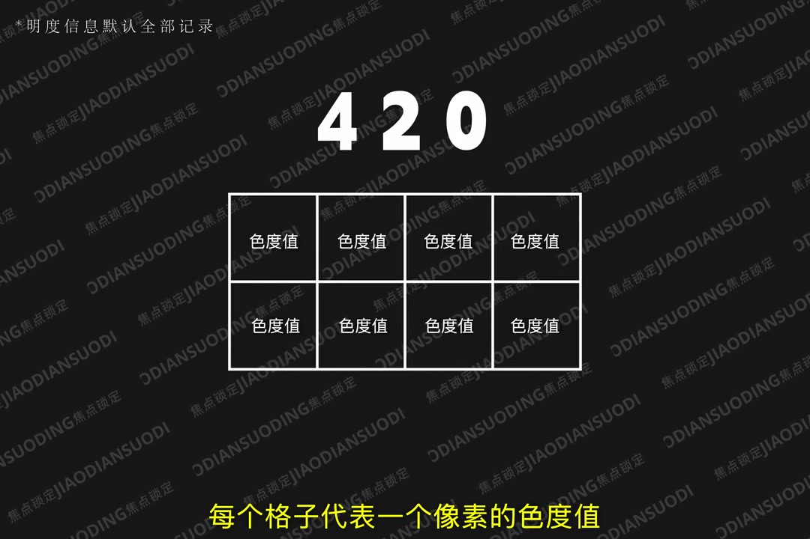
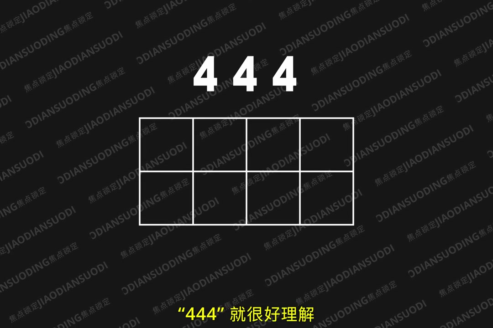

色深：色彩分级数量
00:05想象你是画家：给你一套128色马克笔，能画出丝滑的城市晚霞；换成12色马克笔，天空就出现了明显的分界线——这就是色彩断层。
00:26决定颜色细分数量的是色深，用 bit 形容。
00:368bit：红绿蓝每通道 256 灰度（2^8），共约 1670 万色。
00:4810bit：每通道 1024 灰度（2^10），共约 10.7 亿色——二者相差 64 倍。
[00:09] 128色马克笔：丝滑晚霞渐变
128-color markers: silky sunset gradient

[00:14] 12色马克笔：色彩断层出现
12-color markers: visible color banding

[00:20] 色彩断层：颜色分级不够
Color banding: not enough color gradation
色深的影响与 log 模式
01:02相机支持 10bit，渐变更自然的画面，尤其在面对颜色渐变时，后期调整后更明显。
01:10这就是为什么 log 模式视频不要用 8bit 拍——有限色彩空间放进大量信息，后期重新拉伸时颜色分级不够，很容易看到画面断层。

[00:40] 10bit 渐变自然：10.7亿色 vs 1670万色
Natural 10-bit gradients: 1.07 billion colors vs 16.7 million colors
色度采样：420 / 422 / 444
01:26人眼对亮度明暗极其敏感，但对色彩细微变化没那么挑剔。
01:39每个像素必须保留明度信息，但可以让多个像素共享一个色度值——大大减少存储数据量。
01:484:2:0：每行4像素，第一行记录2个色度，第二行继承第一行。
02:054:2:2：第一行、第二行各记录2个色度。4:4:4：色彩全记录，专业电影机规格。

[01:49] 4:2:0：第二行继承第一行色度
4:2:0: the second row inherits chroma from the first

[02:15] 4:4:4：色彩全记录，电影机规格
4:4:4: full color capture, cinema-camera grade
什么时候需要高采样
02:26日常拍摄即便用 4:2:0 依旧能得到不错的画面。
02:31但要做更精细专业的二级调色和抠像时，由于许多像素没有自己的色度值，就会出现颜色溢出、边缘发糊等问题。
色深管“颜色细不细”，色度采样管“信息留多少”——日常 8bit 420 够用，拍 log、重调色、抠像就上 10bit 422+。